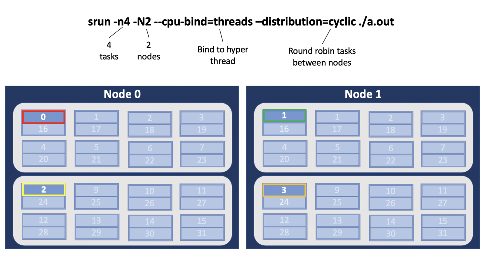
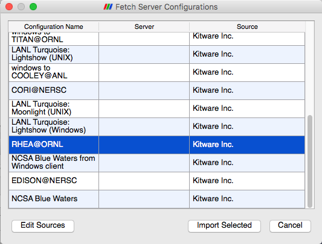
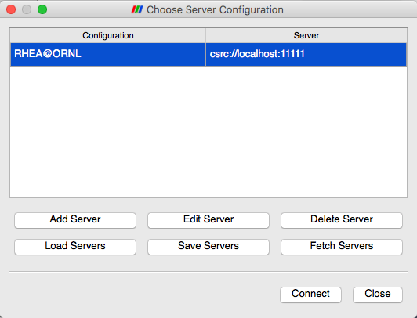

Rhea User Guide¶
System Overview¶
Rhea is a 521-node commodity-type linux cluster. The primary purpose of rhea is to provide a conduit for large-scale scientific discovery via pre/post processing and analysis of simulation data generated on Summit. Users with accounts on Summit will automatically be given access to rhea.
Compute nodes¶
Rhea contains 521 compute nodes separated into two partitions:
| Partition | Node Count | Memory | GPU | CPU |
|---|---|---|---|---|
| rhea (default) | 512 | 128 GB | N/A | [2x] Intel® Xeon® E5-2650 @2.0 GHz - 8 cores, 16 HT (total 16 cores, 32 HT per node |
| gpu | 9 | 1 TB | [2x] NVIDIA® K80 | [2x] Intel® Xeon® E5-2695 @2.3 GHz - 14 cores, 28 HT (total 28 cores, 56 HT per node |
Rhea Partition
The first 512 nodes make up the rhea partition, where each node contains two 8-core 2.0 GHz Intel Xeon processors with Intel’s Hyper-Threading (HT) Technology and 128GB of main memory. Each CPU in this partition features 8 physical cores, for a total of 16 physical cores per node. With Intel® Hyper-Threading Technology enabled, each node has 32 logical cores capable of executing 32 hardware threads for increased parallelism.
GPU Partition
Rhea also has nine large memory/GPU nodes, which make up the gpu partition. These nodes each have 1TB of main memory and two NVIDIA K80 GPUs in addition to two 14-core 2.30 GHz Intel Xeon processors with HT Technology. Each CPU in this partition features 14 physical cores, for a total of 28 physical cores per node. With Hyper-Threading enabled, these nodes have 56 logical cores that can execute 56 hardware threads for increased parallelism.
Note
To access the gpu partition, batch job submissions should request -p gpu.
Please see the Batch Queues on Rhea section to learn about the queuing policies for these two partitions. Both compute partitions are accessible through the same batch queue from Rhea’s Login nodes.
Rhea features a 4X FDR Infiniband interconnect, with a maximum theoretical transfer rate of 56 Gb/s.
Login nodes¶
Rhea features (4) login nodes which are identical to the compute nodes, but with 64GB of RAM. The login nodes provide an environment for editing, compiling, and launching codes onto the compute nodes. All Rhea users will access the system through these same login nodes, and as such, any CPU- or memory-intensive tasks on these nodes could interrupt service to other users. As a courtesy, we ask that you refrain from doing any analysis or visualization tasks on the login nodes.
To connect to Rhea, ssh to rhea.ccs.ornl.gov -
ssh username@rhea.ccs.ornl.gov
For more information on connecting to OLCF resources, see Connecting for the first time.
File systems¶
The OLCF’s center-wide Alpine IBM Spectrum Scale Filesystem name Alpine is available on Rhea for computational work. An NFS-based file system provides User Home Directories (NFS) and Project Home Directories (NFS). Additionally, the OLCF’s HPSS Data Archival System provides archival spaces.
Shell and programming environments¶
OLCF systems provide hundreds of software packages and scientific libraries pre-installed at the system-level for users to take advantage of. To facilitate this, environment management tools are employed to handle necessary changes to the shell dynamically. The sections below provide information about using the management tools at the OLCF.
Default shell¶
A user’s default shell is selected when completing the user account request form. The chosen shell is set across all OLCF resources. Currently, supported shells include:
- bash
- tsch
- csh
- ksh
If you would like to have your default shell changed, please contact the OLCF user assistance center at help@olcf.ornl.gov.
Environment management with lmod¶
The modules software package allows you to dynamically modify your user
environment by using pre-written modulefiles. environment modules are provided
through Lmod, a Lua-based module
system for dynamically altering shell environments. by managing changes to the
shell’s environment variables (such as path, ld_library_path, and
pkg_config_path), Lmod allows you to alter the software available in your
shell environment without the risk of creating package and version combinations
that cannot coexist in a single environment.
Lmod is a recursive environment module system, meaning it is aware of module compatibility and actively alters the environment to protect against conflicts. Messages to stderr are issued upon Lmod implicitly altering the environment. Environment modules are structured hierarchically by compiler family such that packages built with a given compiler will only be accessible if the compiler family is first present in the environment.
note: Lmod can interpret both Lua modulefiles and legacy Tcl modulefiles. However, long and logic-heavy Tcl modulefiles may require porting to Lua.
General usage¶
Typical use of Lmod is very similar to that of interacting with modulefiles on
other OLCF systems. The interface to Lmod is provided by the module command:
| Command | Description |
|---|---|
| module -t list | Shows a terse list of the currently loaded modules. |
| module avail | Shows a table of the currently available modules |
| module help <modulename> | Shows help information about <modulename> |
| module show <modulename> | Shows the environment changes made by the <modulename> modulefile |
| module spider <string> | Searches all possible modules according to <string> |
| module load <modulename> […] | Loads the given <modulename>(s) into the current environment |
| module use <path> | Adds <path> to the modulefile search cache and MODULESPATH |
| module unuse <path> | Removes <path> from the modulefile search cache and MODULESPATH |
| module purge | Unloads all modules |
| module reset | Resets loaded modules to system defaults |
| module update | Reloads all currently loaded modules |
Note
Modules are changed recursively. Some commands, such as
module swap, are available to maintain compatibility with scripts
using Tcl Environment Modules, but are not necessary since Lmod
recursively processes loaded modules and automatically resolves
conflicts.
Searching for modules¶
Modules with dependencies are only available when the underlying dependencies,
such as compiler families, are loaded. Thus, module avail will only display
modules that are compatible with the current state of the environment. To search
the entire hierarchy across all possible dependencies, the spider
sub-command can be used as summarized in the following table.
| Command | Description |
|---|---|
| module spider | Shows the entire possible graph of modules |
| module spider <modulename> | Searches for modules named <modulename> in the graph of possible modules |
| module spider <modulename>/<version> | Searches for a specific version of <modulename> in the graph of possible modules |
| module spider <string> | Searches for modulefiles containing <string> |
Defining custom module collections¶
Lmod supports caching commonly used collections of environment modules on a
per-user basis in $home/.lmod.d. to create a collection called “NAME” from
the currently loaded modules, simply call module save NAME. omitting “NAME”
will set the user’s default collection. Saved collections can be recalled and
examined with the commands summarized in the following table.
| Command | Description |
|---|---|
| module restore NAME | Recalls a specific saved user collection titled “NAME” |
| module restore | Recalls the user-defined defaults |
| module reset | Resets loaded modules to system defaults |
| module restore system | Recalls the system defaults |
| module savelist | Shows the list user-defined saved collections |
Note
You should use unique names when creating collections to
specify the application (and possibly branch) you are working on. For
example, app1-development, app1-production, and
app2-production.
Note
In order to avoid conflicts between user-defined collections
on multiple compute systems that share a home file system (e.g.
/ccs/home/[username]), lmod appends the hostname of each system to the
files saved in in your ~/.lmod.d directory (using the environment
variable lmod_system_name). This ensures that only collections
appended with the name of the current system are visible.
The following screencast shows an example of setting up user-defined module collections on Summit. https://vimeo.com/293582400
Installed Software¶
The OLCF provides hundreds of pre-installed software packages and scientific libraries for your use, in addition to taking software installation requests. See the software page for complete details on existing installs.
Compiling¶
Compiling code on rhea is typical of commodity or beowulf-style hpc linux clusters.
Available compilers¶
The following compilers are available on rhea:
- intel, intel composer xe (default)
- pgi, the portland group compiler suite
- gcc, the gnu compiler collection
Upon login, default versions of the intel compiler and openmpi (message passing interface) libraries are automatically added to each user’s environment. Users do not need to make any environment changes to use the default version of intel and openmpi.
Changing compilers¶
If a different compiler is required, it is important to use the correct environment for each compiler. To aid users in pairing the correct compiler and environment, the module system on rhea automatically pulls in libraries compiled with a given compiler when changing compilers. The compiler modules will load the correct pairing of compiler version, message passing libraries, and other items required to build and run code. To change the default loaded intel environment to the gcc environment for example, use:
$ module load gcc
This will automatically unload the current compiler and system libraries associated with it, load the new compiler environment and automatically load associated system libraries as well.
Changing versions of the same compiler¶
To use a specific compiler version, you must first ensure the compiler’s module is loaded, and then swap to the correct compiler version. For example, the following will configure the environment to use the gcc compilers, then load a non-default gcc compiler version:
$ module load gcc
$ module swap gcc gcc/4.7.1
note: we recommend the following general guidelines for using the programming environment modules:
- Do not purge all modules; rather, use the default module environment provided at the time of login, and modify it.
- Do not swap moab, torque, or mysql modules after loading a programming environment modulefile.
Compiler wrappers¶
Commodity clusters at the olcf can be accessed via the following wrapper programs:
mpiccto invoke the c compilermpicc,mpicxx, ormpic++to invoke the c++ compilermpif77ormpif90to invoke appropriate versions of the fortran compiler
These wrapper programs are cognizant of your currently loaded modules, and will ensure that your code links against our openmpi installation. more information about using openmpi at our center can be found in our software documentation.
Compiling threaded codes¶
When building threaded codes, compiler-specific flags must be included to ensure a proper build.
Openmp¶
For pgi, add “-mp” to the build line.
$ mpicc -mp test.c -o test.x
$ export omp_num_threads=2
For gnu, add “-fopenmp” to the build line.
$ mpicc -fopenmp test.c -o test.x
$ export omp_num_threads=2
For intel, add “-qopenmp” to the build line.
$ mpicc -qopenmp test.c -o test.x
$ export omp_num_threads=2
For information on running threaded codes, please see the Thread Layout subsection of the Running Jobs section in this user guide.
Running Jobs¶
In High Performance Computing (HPC), computational work is performed by jobs. Individual jobs produce data that lend relevant insight into grand challenges in science and engineering. As such, the timely, efficient execution of jobs is the primary concern in the operation of any HPC system.
A job on a commodity cluster typically comprises a few different components:
- A batch submission script.
- A binary executable.
- A set of input files for the executable.
- A set of output files created by the executable.
And the process for running a job, in general, is to:
- Prepare executables and input files.
- Write a batch script.
- Submit the batch script to the batch scheduler.
- Optionally monitor the job before and during execution.
The following sections describe in detail how to create, submit, and manage jobs for execution on commodity clusters.
Login vs Compute Nodes on Commodity Clusters¶
Login Nodes¶
When you log into an OLCF cluster, you are placed on a login node. Login node resources are shared by all users of the system. Because of this, users should be mindful when performing tasks on a login node.
Login nodes should be used for basic tasks such as file editing, code
compilation, data backup, and job submission. Login nodes should not be used
for memory- or compute-intensive tasks. Users should also limit the number of
simultaneous tasks performed on the login resources. For example, a user should
not run (10) simultaneous tar processes on a login node.
Warning
Compute-intensive, memory-intensive, or otherwise disruptive processes running on login nodes may be killed without warning.
Slurm¶
Most OLCF resources now use the Slurm batch scheduler. Previously, most OLCF resources used the Moab scheduler. Summit and other IBM hardware use the LSF scheduler. Below is a comparison table of useful commands among the three schedulers.
| Task | Moab (historical) | LSF (Summit) | Slurm |
|---|---|---|---|
| View batch queue | showq |
jobstat |
squeue |
| Submit batch script | qsub |
bsub |
sbatch |
| Submit interactive batch job | qsub -I |
bsub -Is $SHELL |
salloc |
| Run parallel code within batch job | mpirun |
jsrun |
srun |
Writing Batch Scripts¶
Batch scripts, or job submission scripts, are the mechanism by which a user configures and submits a job for execution. A batch script is simply a shell script that also includes commands to be interpreted by the batch scheduling software (e.g. Slurm).
Batch scripts are submitted to the batch scheduler, where they are then parsed for the scheduling configuration options. The batch scheduler then places the script in the appropriate queue, where it is designated as a batch job. Once the batch jobs makes its way through the queue, the script will be executed on the primary compute node of the allocated resources.
Components of a Batch Script¶
Batch scripts are parsed into the following (3) sections:
Interpreter Line¶
The first line of a script can be used to specify the script’s interpreter; this
line is optional. If not used, the submitter’s default shell will be used. The
line uses the hash-bang syntax, i.e., #!/path/to/shell.
Slurm Submission Options¶
The Slurm submission options are preceded by the string #SBATCH, making them
appear as comments to a shell. Slurm will look for #SBATCH options in a
batch script from the script’s first line through the first non-comment line. A
comment line begins with #. #SBATCH options entered after the first
non-comment line will not be read by Slurm.
Shell Commands¶
The shell commands follow the last #SBATCH option and represent the
executable content of the batch job. If any #SBATCH lines follow executable
statements, they will be treated as comments only.
The execution section of a script will be interpreted by a shell and can contain multiple lines of executables, shell commands, and comments. when the job’s queue wait time is finished, commands within this section will be executed on the primary compute node of the job’s allocated resources. Under normal circumstances, the batch job will exit the queue after the last line of the script is executed.
Example Batch Script¶
1 2 3 4 5 6 7 8 9 | #!/bin/bash
#SBATCH -A XXXYYY
#SBATCH -J test
#SBATCH -N 2
#SBATCH -t 1:00:00
cd $SLURM_SUBMIT_DIR
date
srun -n 8 ./a.out
|
This batch script shows examples of the three sections outlined above:
Interpreter Line¶
1: This line is optional and can be used to specify a shell to interpret the script. In this example, the bash shell will be used.
Slurm Options¶
2: The job will be charged to the “XXXYYY” project.
3: The job will be named test.
4: The job will request (2) nodes.
5: The job will request (1) hour walltime.
Shell Commands¶
6: This line is left blank, so it will be ignored.
7: This command will change the current directory to the directory from where the script was submitted.
8: This command will run the date command.
9: This command will run (8) MPI instances of the executable a.out on the compute nodes allocated by the batch system.
Batch scripts can be submitted for execution using the sbatch command.
For example, the following will submit the batch script named test.slurm:
sbatch test.slurm
If successfully submitted, a Slurm job ID will be returned. This ID can be used to track the job. It is also helpful in troubleshooting a failed job; make a note of the job ID for each of your jobs in case you must contact the OLCF User Assistance Center for support.
Interactive Batch Jobs on Commodity Clusters¶
Batch scripts are useful when one has a pre-determined group of commands to execute, the results of which can be viewed at a later time. However, it is often necessary to run tasks on compute resources interactively.
Users are not allowed to access cluster compute nodes directly from a login
node. Instead, users must use an interactive batch job to allocate and gain
access to compute resources. This is done by using the Slurm salloc command.
Other Slurm options are passed to salloc on the command line as well:
$ salloc -A abc123 -p gpu -N 4 -t 1:00:00
This request will:
salloc |
Start an interactive session |
-A |
Charge to the abc123 project |
-p gpu |
Run in the gpu partition |
-N 4 |
request (4) nodes… |
-t 1:00:00 |
…for (1) hour |
After running this command, the job will wait until enough compute nodes are available, just as any other batch job must. However, once the job starts, the user will be given an interactive prompt on the primary compute node within the allocated resource pool. Commands may then be executed directly (instead of through a batch script).
Debugging¶
A common use of interactive batch is to aid in debugging efforts. interactive access to compute resources allows the ability to run a process to the point of failure; however, unlike a batch job, the process can be restarted after brief changes are made without losing the compute resource pool; thus speeding up the debugging effort.
Choosing a Job Size¶
Because interactive jobs must sit in the queue until enough resources become available to allocate, it is useful to know when a job can start.
Use the sbatch --test-only command to see when a job of a specific size
could be scheduled. For example, the snapshot below shows that a (2) node job
would start at 10:54.
$ sbatch --test-only -N2 -t1:00:00 batch-script.slurm
sbatch: Job 1375 to start at 2019-08-06T10:54:01 using 64 processors on nodes rhea[499-500] in partition batch
Note
The queue is fluid, the given time is an estimate made from the current queue state and load. Future job submissions and job completions will alter the estimate.
Common Batch Options to Slurm¶
The following table summarizes frequently-used options to Slurm:
| Option | Use | Description |
|---|---|---|
| -A | #SBATCH -A <account> | Causes the job time to be charged to <account>.
The account string, e.g. pjt000 is typically composed
of three letters followed by three digits and optionally
followed by a subproject identifier. The utility
showproj can be used to list your valid assigned
project ID(s). This option is required by all jobs. |
| -N | #SBATCH -N <value> | Number of compute nodes to allocate. Jobs cannot request partial nodes. |
| #SBATCH -t <time> | Maximum wall-clock time. <time> is in the
format HH:MM:SS. |
|
| #SBATCH -p <partition_name> | Allocates resources on specified partition. | |
| -o | #SBATCH -o <filename> | Writes standard output to <name> instead of
<job_script>.o$SLURM_JOB_UID. $SLURM_JOB_UID
is an environment variable created by Slurm that
contains the batch job identifier. |
| -e | #SBATCH -e <filename> | Writes standard error to <name> instead
of <job_script>.e$SLURM_JOB_UID. |
| \-\-mail-type | #SBATCH \-\-mail-type=FAIL | Sends email to the submitter when the job fails. |
| #SBATCH \-\-mail-type=BEGIN | Sends email to the submitter when the job begins. | |
| #SBATCH \-\-mail-type=END | Sends email to the submitter when the job ends. | |
| \-\-mail-user | #SBATCH \-\-mail-user=<address> | Specifies email address to use for
--mail-type options. |
| -J | #SBATCH -J <name> | Sets the job name to <name> instead of the
name of the job script. |
| \-\-get-user-env | #SBATCH \-\-get-user-env | Exports all environment variables from the
submitting shell into the batch job shell.
Since the login nodes differ from the service
nodes, using the –get-user-env option is
not recommended. Users should create the
needed environment within the batch job. |
| \-\-mem=0 | #SBATCH \-\-mem=0 | Declare to use all the available memory of the node |
Note
Because the login nodes differ from the service nodes, using
the –get-user-env option is not recommended. Users should create the
needed environment within the batch job.
Further details and other Slurm options may be found through the sbatch man
page.
Batch Environment Variables¶
Slurm sets multiple environment variables at submission time. The following Slurm variables are useful within batch scripts:
| Variable | Description |
|---|---|
$SLURM_SUBMIT_DIR |
The directory from which the batch job was submitted.
By default, a new job starts in your home directory.
You can get back to the directory of job submission
with cd $SLURM_SUBMIT_DIR. Note that this is not
necessarily the same directory in which the batch
script resides. |
$SLURM_JOBID |
The job’s full identifier. A common use for
SLURM_JOBID is to append the job’s ID to
the standard output and error files. |
$SLURM_JOB_NUM_NODES |
The number of nodes requested. |
$SLURM_JOB_NAME |
The job name supplied by the user. |
$SLURM_NODELIST |
The list of nodes assigned to the job. |
Modifying Batch Jobs¶
The batch scheduler provides a number of utility commands for managing submitted jobs. See each utilities’ man page for more information.
Removing and Holding Jobs¶
scancel
Jobs in the queue in any state can be stopped and removed from the queue
using the command scancel.
$ scancel 1234
scontrol hold
Jobs in the queue in a non-running state may be placed on hold using the
scontrol hold command. Jobs placed on hold will not be removed from the
queue, but they will not be eligible for execution.
$ scontrol hold 1234
scontrol release
Once on hold the job will not be eligible to run until it is released to
return to a queued state. The scontrol release command can be used to
remove a job from the held state.
$ scontrol release 1234
Monitoring Batch Jobs¶
Slurm provides multiple tools to view queue, system, and job status. Below are the most common and useful of these tools.
Job Monitoring Commands¶
squeue¶
The Slurm utility squeue can be used to view the batch queue.
To see all jobs currently in the queue:
$ squeue -l
To see all of your queued jobs:
$ squeue -l -u $USER
sacct¶
The Slurm utility sacct can be used to view jobs currently in the queue and
those completed within the last few days. The utility can also be used to see
job steps in each batch job.
To see all jobs currently in the queue:
$ sacct -a -X
To see all jobs including steps owned by userA currently in the queue:
$ sacct -u userA
To see all steps submitted to job 123:
$ sacct -j 123
To see all of your jobs that completed on 2019-06-10:
$ sacct -S 2019-06-10T00:00:00 -E 2019-06-10T23:59:59 -o"jobid,user,account%16,cluster,AllocNodes,Submit,Start,End,TimeLimit" -X -P
jobstat¶
Similar to Summit, the local tool jobstat can be used to view the queue.
$ jobstat
Running jobs------------------------
ST JOBID USER ACCOUNT NODES PARTITION NAME TIME_LIMIT START_TIME TIME_LEFT
R 1671 usrB abc123 10 batch jobA 10:00:00 2019-08-13T10:22:18 3:7:40
Pending jobs------------------------
ST JOBID USER ACCOUNT NODES PARTITION NAME TIME_LIMIT SUBMIT_TIME PRIORITY START_TIME REASON
PD 1677 usrA abc123 10 batch jobB 10:00 2019-08-13T13:43 10101 2019-08-13T17:45 Resources
scontrol show job jobid¶
Provides additional details of given job.
sview¶
The sview tool provide a graphical queue monitoring tool. To use, you will
need an X server running on your local system. You will also need to tunnel X
traffic through your ssh connection:
local-system> ssh -Y username@rhea.ccs.ornl.gov
rhea-login> sview
Job Execution¶
Once resources have been allocated through the batch system, users have the option of running commands on the allocated resources’ primary compute node (a serial job) and/or running an MPI/OpenMP executable across all the resources in the allocated resource pool simultaneously (a parallel job).
Serial Job Execution¶
The executable portion of batch scripts is interpreted by the shell specified on the first line of the script. If a shell is not specified, the submitting user’s default shell will be used.
The serial portion of the batch script may contain comments, shell commands, executable scripts, and compiled executables. These can be used in combination to, for example, navigate file systems, set up job execution, run serial executables, and even submit other batch jobs.
Parallel Job Execution¶
Rhea Compute Node Description¶
The following image represents a high level compute node that will be used below to display layout options.

Note
The Intel cores are numbered in a round robin fashion. 0 and 16 are on the same physical core.
Using srun¶
By default, commands will be executed on the job’s primary compute node,
sometimes referred to as the job’s head node. The srun command is used to
execute an MPI binary on one or more compute nodes in parallel.
srun accepts the following common options:
-N |
Minimum number of nodes |
-n |
Total number of MPI tasks |
--cpu-bind=no |
Allow code to control thread affinity |
-c |
Cores per MPI task |
--cpu-bind=cores |
Bind to cores |
Note
If you do not specify the number of MPI tasks to srun
via -n, the system will default to using only one task per node.
MPI Task Layout¶
Each compute node on Rhea contains two sockets each with 8 cores. Depending on your job, it may be useful to control task layout within and across nodes.
Physical Core Binding¶
The following will run four copies of a.out, one per CPU, two per node with physical core binding

Hyper Thread Binding¶
The following will run four copies of a.out, one per hyper-thread, two per node using a round robin task layout between nodes:
Thread Layout¶
Thread per Hyper-Thread
The following will run four copies of a.out. Each task will launch two threads.
The -c flag will provide room for the threads.
Warning
Not adding enough resources using the -c flag,
threads may be placed on the same resource.
Multiple Simultaneous Jobsteps¶
Multiple simultaneous sruns can be executed within a batch job by placing each
srun in the background.
1 2 3 4 5 6 7 8 9 10 11 | #!/bin/bash
#SBATCH -N 2
#SBATCH -t 1:00:00
#SBATCH -A prj123
#SBATCH -J simultaneous-jobsteps
srun -n16 -N2 -c1 --cpu-bind=cores --exclusive ./a.out &
srun -n8 -N2 -c1 --cpu-bind=cores --exclusive ./b.out &
srun -n4 -N1 -c1 --cpu-bind=threads --exclusive ./c.out &
srun -n4 -N1 -c1 --cpu-bind=threads --exclusive ./c.out &
wait
|
Note
The wait command must be used in a batch script
to prevent the shell from exiting before all backgrounded
sruns have completed.
Warning
The --exclusive flag must be used to prevent
resource sharing. Without the flag each backgrounded srun
will likely be placed on the same resources.
Batch Queues on Rhea¶
The compute nodes on Rhea are separated into two partitions the “Rhea partition”
and the “GPU partition” as described in the Compute nodes section, and
they are available through a single batch queue: batch. The scheduling
policies for the individual partitions are as follows:
Rhea Partition Policy (default)¶
Jobs that do not specify a partition will run in the 512 node Rhea partition:
| Bin | Node Count | Duration | Policy |
|---|---|---|---|
| A | 1 - 16 Nodes | 0 - 48 hr | max 4 jobs running and 4 jobs eligible per user in bins A, B, and C |
| B | 17 - 64 Nodes | 0 - 36 hr | |
| C | 65 - 384 Nodes | 0 - 3 hr |
GPU Partition Policy¶
To access the 9 node GPU Partition batch job submissions should request -p
gpu
| Node Count | Duration | Policy |
|---|---|---|
| 1-2 Nodes | 0 - 48 hrs | max 1 job running per user |
Note
The queue structure was designed based on user feedback and analysis of batch jobs over the recent years. However, we understand that the structure may not meet the needs of all users. If this structure limits your use of the system, please let us know. We want Rhea to be a useful OLCF resource and will work with you providing exceptions or even changing the queue structure if necessary.
Users wishing to submit jobs that fall outside the queue structure are encouraged to request a reservation via the Special Request Form.
Allocation Overuse Policy¶
Projects that overrun their allocation are still allowed to run on OLCF systems, although at a reduced priority. Like the adjustment for the number of processors requested above, this is an adjustment to the apparent submit time of the job. However, this adjustment has the effect of making jobs appear much younger than jobs submitted under projects that have not exceeded their allocation. In addition to the priority change, these jobs are also limited in the amount of wall time that can be used.
For example, consider that job1 is submitted at the same time as job2.
The project associated with job1 is over its allocation, while the project
for job2 is not. The batch system will consider job2 to have been
waiting for a longer time than job1. In addition, projects that are at 125%
of their allocated time will be limited to only one running job at a time. The
adjustment to the apparent submit time depends upon the percentage that the
project is over its allocation, as shown in the table below:
| % Of Allocation Used | Priority Reduction | number eligible-to-run | number running |
|---|---|---|---|
| < 100% | 0 days | 4 jobs | unlimited jobs |
| 100% to 125% | 30 days | 4 jobs | unlimited jobs |
| > 125% | 365 days | 4 jobs | 1 job |
Job Accounting on Rhea¶
Jobs on Rhea are scheduled in full node increments; a node’s cores cannot be allocated to multiple jobs. Because the OLCF charges based on what a job makes unavailable to other users, a job is charged for an entire node even if it uses only one core on a node. To simplify the process, users are given a multiples of entire nodes through Slurm.
Viewing Allocation Utilization¶
Projects are allocated time on Rhea in units of node-hours. This is separate from a project’s Summit allocation, and usage of Rhea does not count against that allocation. This page describes how such units are calculated, and how users can access more detailed information on their relevant allocations.
Node-Hour Calculation¶
The node-hour charge for each batch job will be calculated as follows:
node-hours = nodes requested * ( batch job endtime - batch job starttime )
Where batch job starttime is the time the job moves into a running state, and batch job endtime is the time the job exits a running state.
A batch job’s usage is calculated solely on requested nodes and the batch job’s start and end time. The number of cores actually used within any particular node within the batch job is not used in the calculation. For example, if a job requests (6) nodes through the batch script, runs for (1) hour, uses only (2) CPU cores per node, the job will still be charged for 6 nodes * 1 hour = 6 node-hours.
Viewing Usage¶
Utilization is calculated daily using batch jobs which complete between 00:00 and 23:59 of the previous day. For example, if a job moves into a run state on Tuesday and completes Wednesday, the job’s utilization will be recorded Thursday. Only batch jobs which write an end record are used to calculate utilization. Batch jobs which do not write end records due to system failure or other reasons are not used when calculating utilization. Jobs which fail because of run-time errors (e.g. the user’s application causes a segmentation fault) are counted against the allocation.
Each user may view usage for projects on which they are members from the command
line tool showusage and the My OLCF site.
On the Command Line via showusage¶
The showusage utility can be used to view your usage from January 01
through midnight of the previous day. For example:
$ showusage
Usage:
Project Totals
Project Allocation Usage Remaining Usage
_________________|______________|___________|____________|______________
abc123 | 20000 | 126.3 | 19873.7 | 1560.80
The -h option will list more usage details.
On the Web via My OLCF¶
More detailed metrics may be found on each project’s usage section of the My OLCF site. The following information is available for each project:
- YTD usage by system, subproject, and project member
- Monthly usage by system, subproject, and project member
- YTD usage by job size groupings for each system, subproject, and project member
- Weekly usage by job size groupings for each system, and subproject
- Batch system priorities by project and subproject
- Project members
The My OLCF site is provided to aid in the utilization and management of OLCF allocations. If you have any questions or have a request for additional data, please contact the OLCF User Assistance Center.
Visualization tools¶
ParaView¶
ParaView is an open-source, multi-platform data analysis and visualization application. ParaView users can quickly build visualizations to analyze their data using qualitative and quantitative techniques. The data exploration can be done interactively in 3D or programmatically using ParaView’s batch processing capabilities.
ParaView was developed to analyze extremely large datasets using distributed memory computing resources. The OLCF provides ParaView server installs on Rhea to facilitate large scale distributed visualizations. The ParaView server running on Rhea may be used in a headless batch processing mode or be used to drive a ParaView GUI client running on your local machine.
ParaView client¶
A ParaView client instance is not available on Rhea. Interactive mode requires that your local machine have a version matched ParaView client installation and batch mode can benefit from a local installation as well to aid in script generation. Precompiled ParaView binaries for Windows, Macintosh, and Linux can be downloaded from Kitware.
Interactive mode¶
Although in a single machine setup both the ParaView client and server run on the same host, this need not be the case. It is possible to run a local ParaView client to display and interact with your data while the ParaView server runs in a Rhea batch job, allowing interactive analysis of very large data sets.
Warning
In interactive mode your local ParaView version number must match the ParaView version number available on Rhea. Please check the available ParaView versions using Lmod
Interactive Example¶
The following provides an example of launching the ParaView server on Rhea and connecting to it from a locally running ParaView client. Although several methods may be used the one described should work in most cases.
Warning
For Macintosh clients, it is necessary to install XQuartz (X11) to get a command prompt in which you will securely enter your OLCF credentials.
For Windows clients, it is necessary to install PuTTY to create an ssh connection in step 2.
Step 1: Launch ParaView on your Desktop and fetch a connection script for Rhea
Start ParaView and then select File/Connect to begin.

Next Select Fetch Servers

Next select the connection to Rhea for either windows or Mac/Linux and hit the “Import Selected” button.
You may now quit and restart ParaView in order to save connection setup in your preferences.
Step 2: Establish a connection to Rhea
Once restarted, and henceforth, simply select Rhea from the File->Connect dialog and click the “Connect” button.
A dialog box follows, in which you must enter in your username and project allocation, the number of nodes to reserve and a duration to reserve them for.

When you click OK, a windows command prompt or xterm pops up. In this
window enter your credentials at the OLCF login prompt.

When your job reaches the top of the queue, the RenderView1 view window
will return. At this point you are connected to Rhea and can open files that
reside there and visualize them interactively.
VisIt¶
VisIt is a interactive, parallel analysis and visualization tool for scientific data. VisIt contains a rich set of visualization features so you can view your data in a variety of ways. It can be used to visualize scalar and vector fields defined on two- and three-dimensional (2D and 3D) structured and unstructured meshes.
Installing and Setting Up Visit¶
VisIt uses a client-server architecture. You will obtain the best performance by running the VisIt client on your local computer and running the server on OLCF resources. VisIt for your local computer can be obtained here: VisIt Installation. Rhea currently has Remote Backend Version 2.13.0 available, so the local client version 2.13.x is recommended.
The first time you launch VisIt (after installing), you will be prompted for a remote host preference. Unfortunately, ORNL does not maintain this list and the ORNL entry is outdated. Click the “None” option instead. Restart VisIt, and go to Options→Host Profiles. Select “New Host”
- For host nickname: Rhea (this is arbitrary)
- Remote hostname: rhea.ccs.ornl.gov (required)
- Host name aliases: rhea-login#g (required)
- Maximum Nodes: unchecked (unless using the GPU partition on Rhea)
- Maximum processors: unchecked (arbitrary but use fewer than cores available)
- Path to VisIt Installation:
/sw/rhea/visit(required) - Username: Your OLCF Username (required)
- Tunnel data connections through SSH: Checked (required)
Under the “Launch Profiles” tab create a launch profile. Most of these values are arbitrary
- Profile Name: No GPU, MPI, Multinode (arbitrary)
- Timeout: 480 (arbitrary)
- Number of threads per task: 0 (arbitrary, but not tested with OMP/pthread support)
- Additional arguments: blank (arbitrary)
Under the “Parallel” Tab:
- Launch parallel engine: Checked (required)
- Launch Tab:
- Parallel launch method: sbatch/srun (required)
- Partition/Pool/Queue: batch (required)
- Number of processors: 2 (arbitrary, but high number may lead to OOM errors)
- Number of nodes: 2 (arbitrary)
- Bank/Account: Your OLCF project to use (required)
- Time Limit: 1:00:00 (arbitrary)
- Machine file: Unchecked (required – Lets VisIt get the nodelist from the scheduler)
- Constraints: unchecked
- Advanced tab – All boxes unchecked
- GPU Acceleration
- Use cluster’s graphics cards: Unchecked
Click “Apply”. Exit and re-launch VisIt.
Usage¶
Once you have VisIt installed and set up on your local computer:
- Open VisIt on your local computer.
- Go to: “File→Open file” or click the “Open” button on the GUI.
- Click the “Host” dropdown menu on the “File open” window that popped up and choose “ORNL_Rhea”.
- This will prompt you for your OLCF password, and connect you to Rhea.
- Navigate to the appropriate file.
- Once you choose a file, you will be prompted for the number of nodes and processors you would like to use (remember that each node of Rhea contains 16 processors) and the Project ID, which VisIt calls a “Bank” as shown below.

- Once specified, the server side of VisIt will be launched, and you can interact with your data.
Please do not run VisIt’s client from an OLCF machine. You will get much better performance if you install a client on your workstation and launch locally. You can directly connect to OLCF machines from inside VisIt and access your data remotely. For additional resources, please see the VisIt Wiki.
Troubleshooting¶
VisIt keeps asking for your password.¶
If VisIt keeps asking for your “Password” in the dialog box below, and you are entering your correct PIN + RSA token code, you might need to select “Change username” and then enter your OLCF username when prompted.

This will give you a new opportunity to enter your PIN + token code and your username will appear in login request box as shown below. If you want you OLCF username to be filled in by default, go to “Options→Host profiles” and enter it under “Username”. See the Modifying Host Profiles section below for more details.

VisIt will not connect when you try to draw an image.¶
If VisIt will not connect to Rhea when you try to draw an image, you should login to Rhea and enter “qstat” from the command line. Your VisIt job should appear in the queue. If you see it in a state marked “Q” you should wait a bit longer to see if it will start. If you do not see your job listed in the queue, check to make sure your project ID is entered in your VisIt host profile. See the Modifying Host Profiles section below for instructions.
Modifying Host Profiles¶
To make changes to an exiting host profile, do the following:
- Go to “Options→Host Profiles”.
- The window will display the known hosts on the left, with the settings for that host shown on the right in the “Host Settings” tab.
- You can modify settings relevant to this host machine. For example, you can change the “Username” field if your OLCF username differs from your local computer username.
- Once you have made your changes, press the “Apply” button, and then save the settings (Options/Save Settings).
Each host can have several launch profiles. A launch profile specifies VisIt can be run on a given host computer. To make changes to a host’s launch profile, do the following:
- Go to “Options→Host Profiles”.
- Select the host in the left side of the window.
- Select the “Launch Profiles” tab in the right side of the window. This will display the known launch profiles for this host.
- Select a “Launch Profile” and the settings are displayed in the tabs below.
- You can set your Project ID in the “Default Bank/Account” field in the “Parallel” tab.
- You can change the queue used by modifying the “Partition/Pool/Queue” field in the “Parallel” tab.
- Once you have made your changes, press the “Apply” button, and then save the settings (Options/Save Settings).
Remote Visualization using VNC (non-GPU)¶
In addition to the instructions below, Benjamin Hernandez of the OLCF Advanced Data and Workflows Group presented a related talk, GPU Rendering in Rhea and Titan, during the 2016 OLCF User Meeting.
Step 1 (local system)¶
Install a vncviewer (turbovnc, tigervnc, etc.) on your local machine. When running vncviewer for the first time, it will ask to set a password for this and future vnc sessions.
Step 2 (terminal 1)¶
From a Rhea connection launch a batch job and execute the below matlab-vnc.sh script to start the vncserver and run matlab within:
- localsytem:
ssh -X username@rhea.ccs.ornl.gov - rhea:
salloc -A abc123 -X11 -N 1 -t 1:00:00 - rhea:
./matlab-vnc.sh
$ ./matlab-vnc.sh
New 'rhea6:1 (userA)' desktop is rhea6:1
Starting applications specified in /ccs/home/userA/.vnc/xstartup
Log file is /ccs/home/userA/.vnc/rhea6:1.log
**************************************************************************
Instructions
In a new terminal, open a tunneling connection with rhea6 and port 5901
example:
username@rhea.ccs.ornl.gov -L 5901:rhea6:5901
**************************************************************************
MATLAB is selecting SOFTWARE OPENGL rendering.
Step 3 (terminal 2)¶
In a second terminal on your local system open a tunneling connection following the instructions given by the vnc start-up script:
- localsystem:
ssh username@rhea.ccs.ornl.gov -L 5901:rhea99:5901
Step 4 (local system)¶
Launch the vncviewer. When you launch the vncviewer that you downloaded you will
need to specify localhost:5901. You will also set a password for the initial
connection or enter the created password for subsequent connections.
matlab-vnc.sh (non-GPU rendering)¶
#!/bin/sh
what()
{
hostname
}
echo "Starting vncserver"
vncserver :1 -geometry 1920x1080 -depth 24
echo
echo
echo "**************************************************************************"
echo "Instructions"
echo
echo "In a new terminal, open a tunneling connection with $(what) and port 5901"
echo "example:"
echo " username@rhea.ccs.ornl.gov -L 5901:$(what):5901 "
echo
echo "**************************************************************************"
echo
echo
export DISPLAY=:1
. /sw/rhea/environment-modules/3.2.10/rhel6.7_gnu4.4.7/init/sh
module load matlab/R2016b
matlab
vncserver -kill :1
Remote Visualization using VNC (GPU nodes)¶
Step 1 (local system)¶
Install a vncviewer (turbovnc, tigervnc, etc.) on your local machine. When running vncviewer for the first time, it will ask to set a password for this and future vnc sessions.
Step 2 (terminal 1)¶
From a Rhea connection launch a batch job and execute the below matlab-vnc.sh script to start the vncserver and run matlab within:
- localsytem:
ssh -X username@rhea.ccs.ornl.gov - rhea:
salloc -A abc123 -X11 -N 1 -t 1:00:00 -p gpu - rhea:
./matlab-vnc.sh
$ ./matlab-vnc.sh
New 'rhea6:1 (userA)' desktop is rhea6:1
Starting applications specified in /ccs/home/userA/.vnc/xstartup
Log file is /ccs/home/userA/.vnc/rhea6:1.log
**************************************************************************
Instructions
In a new terminal, open a tunneling connection with rhea6 and port 5901
example:
username@rhea.ccs.ornl.gov -L 5901:rhea6:5901
**************************************************************************
MATLAB is selecting SOFTWARE OPENGL rendering.
Step 3 (terminal 2)¶
In a second terminal on your local system open a tunneling connection following the instructions given by the vnc start-up script:
- localsystem: ssh username@rhea.ccs.ornl.gov -L 5901:rhea99:5901
Step 4 (local system)¶
Launch the vncviewer. When you launch the vncviewer that you downloaded you will
need to specify localhost:5901. You will also set a passoword for the initial
connection or enter the created password for subsequent connections.
vmd-vgl.sh (GPU rendering)¶
#!/bin/sh
what()
{
hostname
}
echo
echo "Starting X"
xinit &
sleep 5
echo "Starting vncserver"
vncserver :1 -geometry 1920x1080 -depth 24
echo
echo
echo "**************************************************************************"
echo "Instructions"
echo
echo "In a new terminal, open a tunneling connection with $(what) and port 5901"
echo "example:"
echo " username@rhea.ccs.ornl.gov -L 5901:$(what):5901 "
echo
echo "**************************************************************************"
echo
echo
export DISPLAY=:1
module load vmd/1.9.3
vglrun vmd
vncserver -kill :1
Remote Visualization using Nice DCV (GPU nodes only)¶
Step 1 (terminal 1)¶
Launch an interactive job:
salloc -A PROJECT_ID -p gpu -N 1 -t 60:00 -M rhea -C DCV
Run the following commands:
$ xinit &
$ export DISPLAY=:0
$ dcv create-session --gl-display :0 mySessionName
$ hostname // will be used to open a tunneling connection with this node
Step 1 (terminal 2)¶
Open a tunneling connection with gpu node N, given by hostname:
ssh username@rhea.ccs.ornl.gov -L 8443:rhea-gpuN:8443
Open your web browser using the following link and use your credentials to
access OLCF systems: https://localhost:8443 When finished, kill the dcv
session in first terminal:
$ dcv close-session mySessionName
$ kill %1